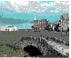
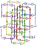
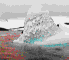
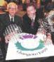

INDEX TO CRYSTALLOGRAPHY NEWS
Index to Past Issues of Crystallography News)
The British Crystallographic Association publishes a newsletter
'Crystallography News' quarterly in March, June, September and
December each year, ISSN 1467- 2790.
Details of the:
The following issues will be accessible from this page as soon as the
Webmaster has time to convert them.
- Early issues
- Issues for 1995 No. 53 Jun 95 ,
54 Sep 95,
55 Dec 95
- Issues for 1996 No. 56 Mar 96, 57 Jun 96, 58 Sep 96, 59 Dec 96
- Issues for 1997 No. 60 Mar 97,
61 Jun 97,
62 Sep 97,
63 Dec 97
- Issues for 1998 No.s
64 Mar 98,
65 Jun 98,
66 Sep 98,
 67 Dec 98
- Issues for 1999 No.s
68 Mar 99
69 Jun 99,
70 Sep 99,
 IUCr XVIII Reports 71 Dec 99
IUCr XVIII Reports 71 Dec 99
- Issues for 2000 No. 72 Mar 00, 73 Jun 00, 74 Sep 00,
75 Dec 00
- Issues for 2001 No. 76 Mar 01, 77 Jun 01,
78 Sep 01, 79 Dec 01
- Issues for 2002 No. 80 Mar 02, 81 Jun 02,
82 Sep 02, 83 Dec 02
- Issues for 2003 No. 84 Mar 03, 85 Jun 03,
86 Sep 03
Notes:
Page last updated 30 May 2006
BCA 'Crystallography News' pages WebMaster
BCA@ISISE.RL.AC.UK
 Click here to return to BCA homepage
Click here to return to BCA homepage